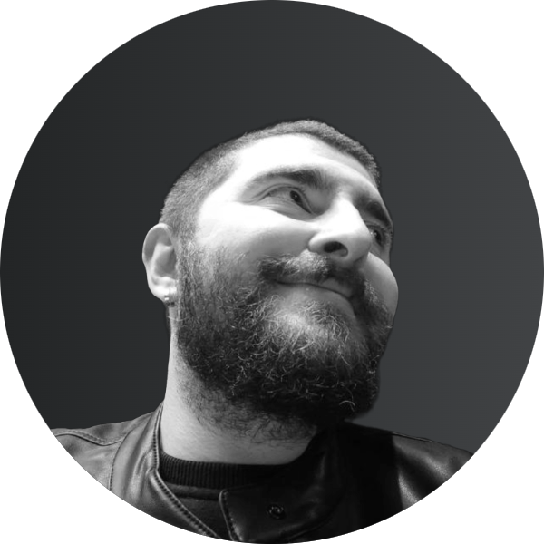

Zafer Akkan

Junior Web Developer / Senior Game Developer
Hello, I'm Zafer, I've been developing games for a long time.
I decided to go into Web Development
to improve myself in every aspect of the software world.
Contact Me
- WORK EXPERIENCE
- Game Developer (Freelancer) / Lunheim Studios [03/01/2024 - 05/02/2024]
- Worked as a freelancer on the project
- Lead Game Developer / Project Flying Cat [05/02/2023 - 06/11/2023]
- Leading developer team
- Worked in the research team
- Worked on gameplay development
- Worked on game optimizations
- Lead Game Developer - Co - Founder / Burger Games [27/12/2021 - 02/01/2023]
- Worked on hyper casual games
- Coaching a junior Game Artist team
- Coaching a junior Game Developer team
- Game Developer / Roof Stacks [15/05/2021 - 18/12/2021]
- Worked on developing and designing hyper casual games
- Coaching a junior Game Developer team
- Game Developer / Any Games [05/01/2020 - 09/05/2021]
- Worked on developing hyper casual games
- Worked on market research
- Made a hit game called "Fast Driver 3D"
- Junior Game Developer / Zerosum Games [01/11/2019 - 30/12/2019]
- Worked on casual game prototyping and presentation
- EDUCATION
- Digital Game Design / Istanbul Bilgi University [14/08/2017 - 30/06/2021]
- Level in EQF: EQF level 6
- SKILLS
- Game development
- Game designing
- HTML